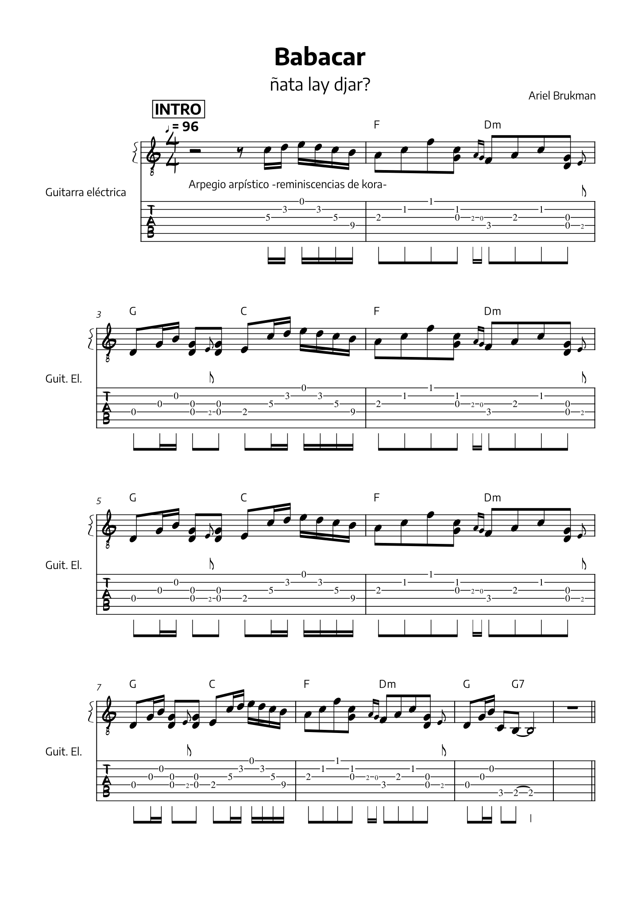
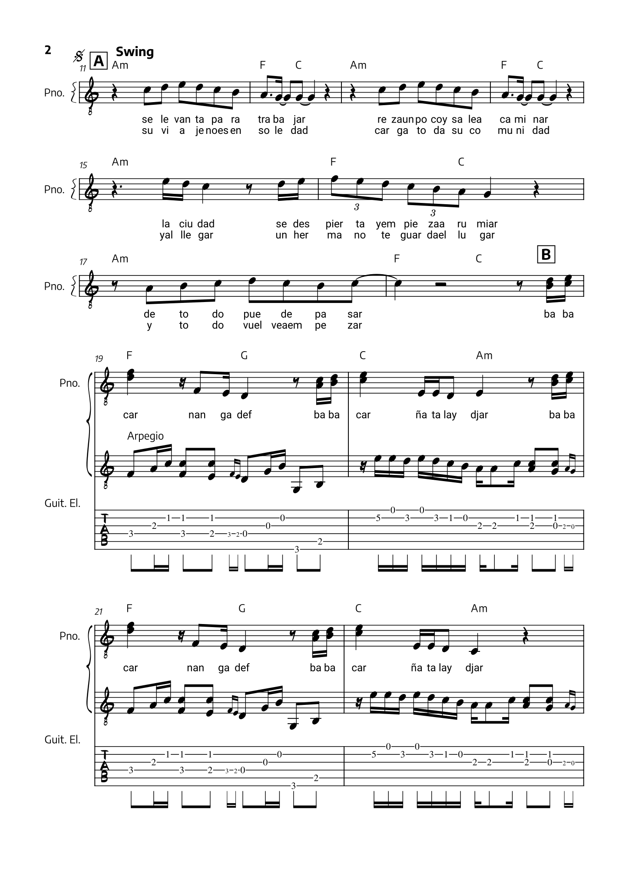
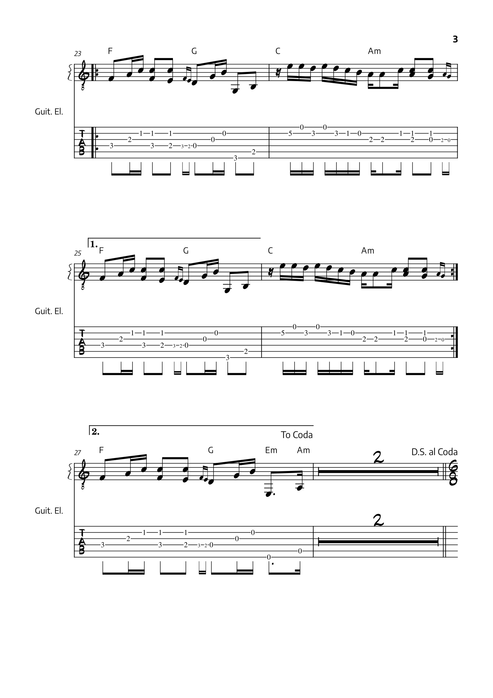

<!-- <!DOCTYPE html>
<html lang="es">
    <head>
        <meta charset="UTF-8">
        <title>barbacoaj - Babacar</title>
        <link rel="icon" type="image/x-icon" href="../OBRAS/IMAGENES/iconovolver-11.svg">
        <link rel="preconnect" href="https://fonts.googleapis.com">
        <link rel="preconnect" href="https://fonts.gstatic.com" crossorigin>
        <link href="https://fonts.googleapis.com/css2?family=Encode+Sans:wght@400;500;600;700;800&family=Roboto+Mono:wght@100;300&display=swap" rel="stylesheet">
        <meta name="viewport" content="width=device-width, initial-scale=1.0">
        <script src="./prefixfree.min.js"></script>
        <script src="https://kit.fontawesome.com/35618bf9b7.js" crossorigin="anonymous"></script>
        <link rel="stylesheet" href="../ESTILOS/bootstrap.css">
        <link rel="stylesheet" href="../ESTILOS/estilos.css">
    </head>
    <body>
        <header class="container-fluid fondoceleste fixed-top">
            <h1 class="barbacoaj"><a class="d-block h-100 w-100" href="../index.html">barbacoaj</a></h1>
            <div class="row mt-1">
                <nav class="navbar navbar-expand-lg fondoceleste">
                    <div class="container-fluid">
                        <button class="navbar-toggler" type="button" data-bs-toggle="collapse" data-bs-target="#barra" aria-controls="barra" aria-expanded="false" aria-label="Toggle navigation">
                        <span class="navbar-toggler-icon"></span>
                        </button>
                    <div class="collapse navbar-collapse" id="barra">
                        <ul class="navbar-nav me-auto ms-lg-auto me-lg-0 mb-2 mb-lg-0 text-center">
                            <li class="nav-item"><a class="nav-link" href="#palabras">palabras del autor</a></li>
                            <li class="nav-item"><a class="nav-link" href="#letra">letra</a></li>
                            <li class="nav-item"><a class="nav-link" href="#cifrado">cifrado</a></li>
                            <li class="nav-item"><a class="nav-link" href="#clarinete">flauta</a></li>
                            <li class="nav-item"><a class="nav-link" href="#saxo">saxo tenor</a></li>
                            <li class="nav-item"><a class="nav-link" href="#trompeta">trompeta</a></li>
                            <li class="nav-item"><a class="nav-link" href="#trombonI">trombon I</a></li>
                            <li class="nav-item"><a class="nav-link" href="#trombonII">trombon II</a></li>
                            <li class="nav-item"><a class="nav-link" href="#teclado">teclado</a></li>
                        </ul>
                    </div>
                </div>
            </nav>
            </div>
        </header>
            <section id="palabras" class="container-xl">
                <h2 class="oculto">Palabras del autor</h2>
                <div class="row pt-2">
                    <p class="col-auto"><strong>Babacar</strong> es un nombre de personas a las que se considera de género masculino al nacer, al menos hasta donde puedo saber. Un nombre de varoncito. Es una <em>versión del nombre árabe Abu Bakr</em>, del cual encontré dos traducciones; <q cite="https://es.wikipedia.org/wiki/Abu_Bakr_(desambiguaci%C3%B3n)">padre de camellos</q> y <q cite="https://es.wikipedia.org/wiki/Abu_Bakr_as-Siddiq">aquel con el que Ala está complacido</q>. Además Abu Bakr es el nombre del primer califa del islam.</p>
                    <p class="col-auto">En este caso particular, me tomé el atrevimiento de suponer que Babacar puede ser un nombre usual entre población que reside en países del <strong>África occidental subsahariana; Senegal, Gambia, Mali, Guinea, etc</strong>. Pero <em>Babacar, la canción, es una pregunta -literalmente son dos- sobre la existencia en tanto experiencia cotidiana</em>. Sobre la misión de un hombre, con el sesgo machista y patriarcal que implica, pues viene al pelo que quede explícito.</p>
                    <p class="col-auto">La idea de la canción deviene de la curiosidad respecto de la <strong>migración senegalesa en Argentina</strong>, que suele ser noticia por los conflictos en la vía pública -ya sea con otros comerciantes o con la policía- que genera particularmente en ciertas zonas comerciales de la Ciudad de Buenos Aires, entre otras- su inserción económica más frecuente: <strong>la venta ambulante.</strong></p>
                    <p class="col-auto">La canción como es hoy, tardó bastante en llegar y en su desarrollo sufrió modificaciones. La idea nunca fue hacer una tesis, pero a veces para encontrar la inspiración suelo leer artículos académicos, ver vídeos documentales o cosas por el estilo. En medio del pelotudeo “aprendí” algunas “frases de supervivencia” en <a href="https://es.wikipedia.org/wiki/W%C3%B3lof" target="_blank"><strong>wolof</strong></a> de algunas páginas web orientadas al turismo. Entre ellas están las dos preguntas del estribillo <em>nanga def</em> -como estas?- y <em>ñata lay djar</em> -cuanto cuesta? En referencia al precio de algún bien en un intercambio comercial-. Ésta última rimaba con Babacar y así sin mucho esfuerzo nació la canción en la que logré no mencionar a la policía y hacer un retrato burdo, básico y somero de una posible experiencia de un posible protagonista inmigrante proveniente de Senegal y perteneciente a la etnia wolof.</p>
                    <p class="col-auto">Respecto a las frases en dicho idioma, si sos wolof, o tenes un conocimiento profundo del mismo, no puedo más que pedirte disculpas por mi atrevimiento. La intención es más tender un puente y entablar un diálogo que faltar el respeto.</p>
                    <p class="col-auto">Por otra parte, y más allá de que las frases fueron “testeadas” en unas pocas oportunidades con “buenos resultados”, fueron utilizadas en situaciones de intercambio comercial o charla coloquial. Puntualmente “ñata lay djar” no intenta preguntar únicamente el precio de un bien, aunque ciertamente remite a la manera en que nos relacionamos inicialmente con personas como Babacar -asumo-, en la calle, porque les compramos dicho bien. También busca conocer “costo emocional” de la empresa migrante; estar solo, lejos de la familia, teniendo la responsabilidad de conseguir dinero para enviar remesas, conociendo nuevas personas, nuevos lugares, etc. Desconozco si, como en el español, en el wolof se puede preguntar “cuanto cuesta” con esa polisemia implícita.</p>
                    <p class="col-auto">Sobre de las características de la experiencia migrante que se expresan en la canción, fueron tomadas del material consultado y no pretenden ser exhaustivas. Son solo algunos aspectos básicos que saqué, de más está decir que hay diferentes experiencias.</p>
                    <p class="col-auto">En la caracterización, así como en la presente explicación, se piensa en una persona de género masculino, es estadísticamente más frecuente la migración de hombres relativamente jóvenes -entre 20 y 30 años-. Es un rasgo común del proyecto migratorio familiar que intenté comparar al de algunos jóvenes argentinos de sectores medios, medios-altos que migran para ir a la universidad desde pequeños pueblos o ciudades a las grandes urbes -CABA, Córdoba, Rosario, La Plata- donde quizá no es tan evidente la misión asignada, pero no deja de haber una carga de responsabilidad para con la familia que pone expectativas -y también recursos económicos- en la graduación del hijo varón, un tema tradicional de la idiosincrasia del argentino blanco de clase media. No es que las mujeres estén exentas, pero el discurso en la forma tradicional es construido en torno a la imagen del “varón proveedor”.</p>
                    <p class="col-auto">En cuanto a lo musical, intenté incorporar elementos del <strong>mbalax</strong>, un genero muy popular entre la población wolof de Senegal y Gambia. Podría incluso arriesgarme y decir que <em>es el genero más popular</em>. Está basado en el <em>sabar</em>, un conjunto de percusión donde la base la marca el tambor mbeung mbeung, que parece una especie de atabaque que se toca con palo y mano. Hay también un componente coreográfico que encuentro indisociable del genero, aunque no me atrevo a asegurar que mbalax es danza y música.</p>
                    <p class="col-auto">El mayor exponente del mbalax, apodado “le roi” -el rey, en francés-, es <strong>Youssou N’Dour</strong>; a quien les de mi generación podríamos llegar a identificar por el hit que sacó en los 90’ <em>Seven Seconds</em>, junto a Neneh Cherry -que no se quien es, pero cantó esa canción-. N’Dour tiene, entre muchos otros, el mérito de ser <em>el artista senegalés más reconocido en el mundo</em> y haber hecho “digerible” el mbalax para el público occidental ávido de “World music”.</p>
                    <p class="col-auto">Además escuché otros artistas como Xalam 2, Omar Pene, Pape Diouf, Thione Seck, Wally Seck, Cheikh Lo, Orchestra Baobab, Lezmo Diamono, Etoil de Dakar, etc. La verdad es que me costó y me cuesta entender el estilo en términos estrictamente técnicos musicales, con lo cual lo que se puede apreciar del mismo en la canción sea probablemente poco o nulo. Pero bueno, si les interesa busquen esos artistas, escuchen y vean vídeos que está bien piola. Les dejo un <a href="https://www.youtube.com/watch?v=0ZWOW-7TWyg&t=46s" target="_blank">vídeo en el cual me base</a> como para intentar entender una estructura rítmica básica del genero, explicada por el mismísimo Youssou N’Dour!</p>
                    <p class="col-auto"><strong>Ariel J. Brukman</strong></p>
                </div>
            </section>
            <section id="letra" class="container-xl">
                <div class="row pt-2 text-center">
                <h2>Babacar</h2>
                <p>se levanta para trabajar<br>reza un rato y sale a caminar<br>la ciudad,<br>se despierta y empieza a rumiar<br>de todo puede pasar</p>
                <p><em>babacar<br>nanga def<br>babacar<br>ñata lay djar</em></p>
                <p>su viaje no es en soledad<br>carga a toda su comunidad<br>y al llegar<br>un hermano te guarda el lugar<br>y todo vuelve a empezar</p>
                <p><em>babacar<br>nanga def<br>babacar<br>ñata lay djar</em></p><br><p>babacar<br>babacar<br>ha venido desde lejos<br>solo quiere trabajar</p>
                <p>babacar<br>babacar<br>ha venido desde lejos<br>solo quiere trabajar</p><br><p>babacar<br>babacar<br>como cuando te mandaron<br>a estudiar a capital</p>
                <p>babacar<br>babacar<br>necesita pasaporte<br>documento nacional</p><br><p>babacar<br>babacar<br>trabajar un poco aquí<br>vivir otro poco allá</p><br><p>babacar<br>babacar<br>trabajar un poco aquí<br>vivir otro poco allá</p>
                </div>
            </section>
            <section id="cifrado" class="partes container-xl">
                <h2 class="oculto">Cifrado</h2>
                <figure></figure><figure></figure>
                <figure></figure><figure></figure>
                <figure></figure>
                <figure></figure>
            </section>
            <section id="clarinete" class="partes container-xl">
                <h2 class="oculto">Flauta</h2><figure></figure></section>
            <section id="saxo" class="partes container-xl">
                <h2 class="oculto">Saxo</h2><figure></figure></section>
            <section id="trompeta" class="partes container-xl">
                <h2 class="oculto">Trompeta</h2><figure></figure></section>
            <section id="trombonI" class="partes container-xl">
                <h2 class="oculto">Trombon I</h2><figure></figure></section>
            <section id="trombonII" class="partes container-xl">
                <h2 class="oculto">Trombon II</h2><figure></figure></section>
            <section id="teclado" class="partes container-xl">
                <h2 class="oculto">Teclado</h2>
                <figure class="teclado">
                    </figure>
                    <div class="palabras">
                    <p>Éste arreglo fue pensado para que suene algo parecido a lo que toca Stevie Wonder en la canción <a href="https://www.youtube.com/watch?v=ftdZ363R9kQ" target="_blank">Superstition</a>. Con ese sonido del clavinet. Ya había intentado eso en otras canciones y recientemente me pregunté porque no se me ocurrió buscar tutoriales en youtube al respecto. En aquella primera ocasión no estaban tan en vilo los tutos de youtube, pero ahora si, así que si querés probar algunas que ya fueron sistematizadas por tecladistas que conocen mucho mejor el estilo y el instrumento que yo, te dejo dos alternativas que me parecieron muy buenas.</p><p>El  <a href="https://www.youtube.com/watch?v=fkhiBO3bBzE" target="_blank">primer vídeo es de Michael Hartigan</a>, donde explica como el toca ese tipo de groove. Es lo que siempre busque, una formula que se pueda pensar tipo loop para acompañar rítmicamente la base y darle ese condimento sabroso.</p><p>El <a href="https://www.youtube.com/watch?v=lVRIhotRplw&t=269s" target="_blank">segundo vídeo es un vídeo de Matt Johnson</a>, que aparentemente es el tecladista de Jamiroquai!. Bueno, nada... El vídeo se explica solo.</p>
                </div>
            </section>
            <footer class="container-fluid fondoazul py-2 py-lg-3 mt-3">
                <div class="row justify-content-between">
                    <div class="col-auto order-2">
                        <ul class="row justify-content-center align-items-center mb-0 redes">
                            <li class="col-auto"><a href="https://www.instagram.com/barbacoaj" target="blank" class="ig">instagram</a></li>
                            <li class="col-auto"><a href="https://www.tiktok.com/@barbacoaj" target="blank" class="tk">tiktok</a></li>
                            <li class="col-auto"><a href="https://open.spotify.com/artist/4dpsqNfNjy0B0dPopSwTS2" target="blank" class="spt">spotify</a></li>
                            <li class="col-auto"><a href="https://www.youtube.com/barbacoaj" target="blank" class="yt">youtube</a></li>
                        </ul>
                    </div>
                    <div class="col-auto order-1">
                        <a rel="license" href="http://creativecommons.org/licenses/by/4.0/"></a>
                    </div>
                </div>
            </footer>
    
    
        <script src="../JS/bootstrap.bundle.js"></script>
        <script>
                        const btns = document.querySelectorAll('.nav-item')
                        const barra = document.querySelector(".navbar-collapse")
                        const cierre = new bootstrap.Collapse(barra, {
                            toggle: false
                        })
                        btns.forEach((btn) => {
                            btn.addEventListener('click', () => {
                                if(barra.classList.contains( 'show' )){
                                    cierre.toggle()
                                }
                            })
                        })
        </script>
    </body>
</html> -->